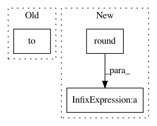

0c60922fb0614132433779ad45ab8f30783db2ae,test/quantization/test_workflow_module.py,,_fake_quantize_learnable_per_channel_affine_grad_reference,#Any#Any#Any#Any#Any#Any#Any#Any#,146
Before Change
X_i = X_flattened[i]
dY_i = dY_flattened[i]
Xq_i = _quantize_per_tensor(
X_i, scale_i, zero_point_i, quant_min, quant_max).to(device)
Xfq_i = (Xq_i - zero_point_i) * scale_i
indicate_small_scale_i = (Xq_i == quant_min).float().to(device)
indicate_big_scale_i = (Xq_i == quant_max).float().to(device)
After Change
X_i = X_flattened[i]
dY_i = dY_flattened[i]
Xq_i = ((X_i / scale_i) + zero_point_i).round()
Xfq_i = (Xq_i - zero_point_i) * scale_i
indicate_small_scale_i = (Xq_i < quant_min).float().to(device)
indicate_big_scale_i = (Xq_i > quant_max).float().to(device)
indicate_middle_scale_i = torch.ones(indicate_small_scale_i.shape).to(device) - \
indicate_small_scale_i - indicate_big_scale_i
indicate_saturate_zp_i = ((Xq_i < quant_min).float() +
(Xq_i > quant_max).float()).to(device)
indicate_unsaturate_zp_i = torch.ones(indicate_saturate_zp_i.shape).to(device) - \
indicate_saturate_zp_i
Xq_i = Xq_i.clamp(quant_min, quant_max)
Xfq_i = (Xq_i - zero_point_i) * scale_i
grad_small_scale_i = quant_min - zero_point_i
grad_big_scale_i = quant_max - zero_point_i
In pattern: SUPERPATTERN
Frequency: 3
Non-data size: 3
Instances
Project Name: pytorch/pytorch
Commit Name: 0c60922fb0614132433779ad45ab8f30783db2ae
Time: 2021-02-03
Author: haichuan@fb.com
File Name: test/quantization/test_workflow_module.py
Class Name:
Method Name: _fake_quantize_learnable_per_channel_affine_grad_reference
Project Name: IBM/adversarial-robustness-toolbox
Commit Name: 705d7ff759a0b76ddf1b30ab8ef135c0b67efa8b
Time: 2020-04-23
Author: M.N.Tran@ibm.com
File Name: art/attacks/evasion/projected_gradient_descent/projected_gradient_descent_pytorch.py
Class Name: ProjectedGradientDescentPytorch
Method Name: generate
Project Name: analysiscenter/batchflow
Commit Name: 260fe0d000a12e869206d8e36300a446a9891b35
Time: 2019-11-17
Author: nikita_007_94@mail.ru
File Name: batchflow/models/eager_torch/layers/core.py
Class Name: Dropout
Method Name: forward